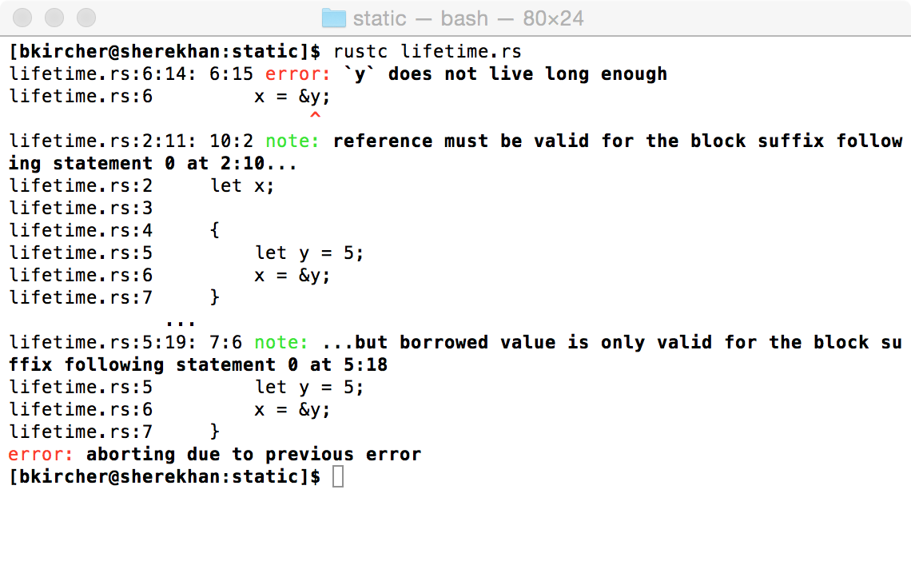
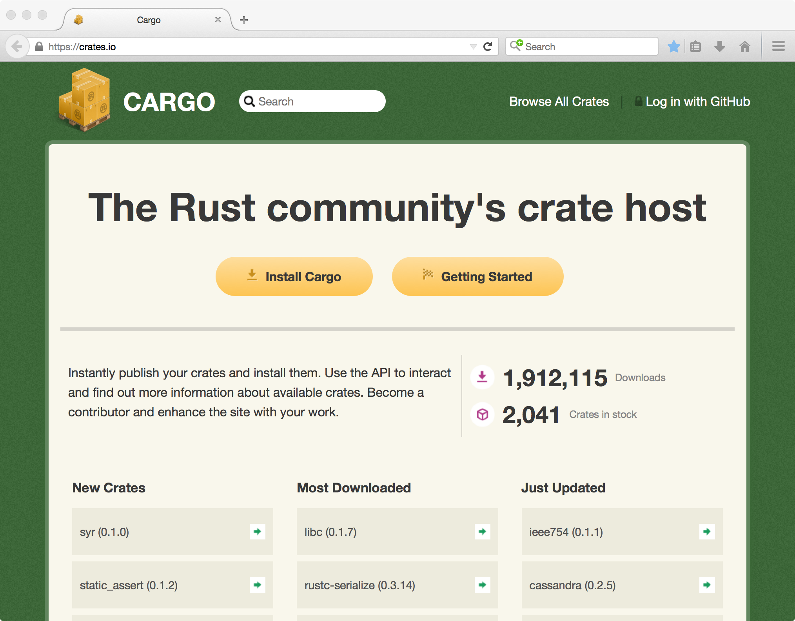

Rust
Intro for C++ programmers
Created by Kai / @_cibo_ and Ben / @predatorhat
fn main() {
println!("Hello, there!");
}
- No garbage collector
- No big runtime
- RAII everywhere
- Zero-cost abstractions
| C++ | Rust |
|---|---|
| auto x = 42; | let x = 42; |
| std::unique_ptr<T> | Box<T> |
| std::shared_ptr<T> | Rc<T> and Arc<T> |
| Destructors | trait Drop |
| __asm | asm! macro |
Selling Point?
Quite similar to C++. So why do we need another language?
Selling Point?
Rust's type system!
void logError(const char* msg, int* ints) {
fprintf(stderr, "%s: %i\n", msg, ints[0]);
}
int main() {
int* ptr = (int*)malloc (SIZE);
// ...
if (err) {
abrt = 1;
free(ptr);
}
// ...
if (abrt) {
logError("operation aborted before commit", ptr);
}
}
To catch this in C or C++ you need
- Something like ASAN and/or Valgrind's Memcheck
- Good test coverage
- And you need to run those tests
- If code is in one TU: static code analysis might help
In Rust, lifetime is part of an object's type
fn main() {
let x;
{
let y = 5;
x = &y;
}
println!("x's value is {}", x);
}
And thus, checked at compile time
More examples
Who is using Rust?
- rustc
- Mozilla Servo browser engine
- Skylight, a profiler for Rails apps
Libraries?
FFI?
Small Peek Into Error Handling
panic! unwinds the thread
fn guess(n: i32) -> bool {
if n < 1 || n > 10 {
panic!("Invalid number: {}", n);
}
n == 5
}
fn main() {
guess(11);
}
enum Option<T> {
None,
Some(T),
}
Option<T>
fn find(haystack: &str, needle: char) -> Option<usize> {
for (offset, c) in haystack.char_indices() {
if c == needle {
return Some(offset);
}
}
None
}
fn main() {
let filename = "foobar.txt";
match find(filename, '.') {
Some(i) => println!("Filename extension: {}", &filename[i+1..]),
None => println!("No extension found!"),
}
}
Thoughts on Error Handling in Rust
Somewhat mixed...
- Way better than arbitrary return values
- Seems harder to use than exceptions
- Anyone?